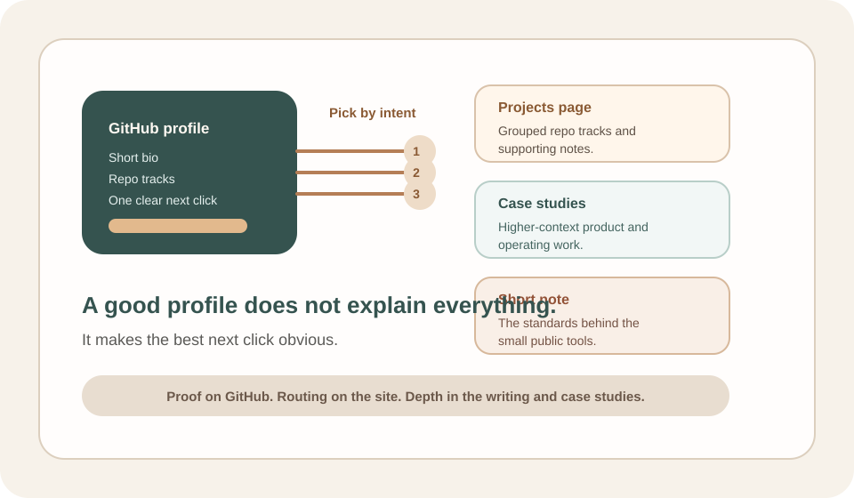

GitHub Profiles Should Choose the First Click
A good GitHub profile should make the best next click obvious instead of making a stranger sort through an undifferentiated list of links.
A GitHub profile usually gets only a few minutes of real attention. That means the job is not to say everything. The job is to make the first click obvious.
The profile is a router, not a warehouse
The weak version of a profile README is a long mixed list:
- a general bio
- every repo that might matter
- a pile of external links
- a few notes without a clear entry point
Nothing is individually wrong, but the reader still has to decide where to start. I want the profile to do less than that and do it more clearly.
What I want a stranger to know quickly
After a short skim, the reader should be able to tell:
- what kind of problems I keep choosing
- whether the repos are practical or just decorative
- which link gives the best next level of depth
That usually means grouping the repo work by pattern instead of keeping one flat inventory and giving the site one explicit job: carry the higher-context version.
The first click should match the intent
If someone wants proof, GitHub can carry that. If they want grouped repo context, the projects page should be the first click. If they want product judgment and higher-context operating work, the case studies page should be the first click.
If they want the standards behind the small tools, one short note should be the first click. That is a better experience than asking the reader to infer the map from ten unrelated bullets.

Why this matters for small public repos
Small repos are especially vulnerable here because they look interchangeable at a glance. If the profile does not tell the reader what the batch is proving, the repos flatten into "a person made a lot of little tools." The README should prevent that flattening.
It should tell the reader which batch is about checks, which one is about reusable artifacts, and which one is about starter patterns with clean boundaries.
The bar I care about
The profile does not need to become a full homepage. It just needs to choose the first click well enough that the rest of the public surface compounds instead of competing with itself.